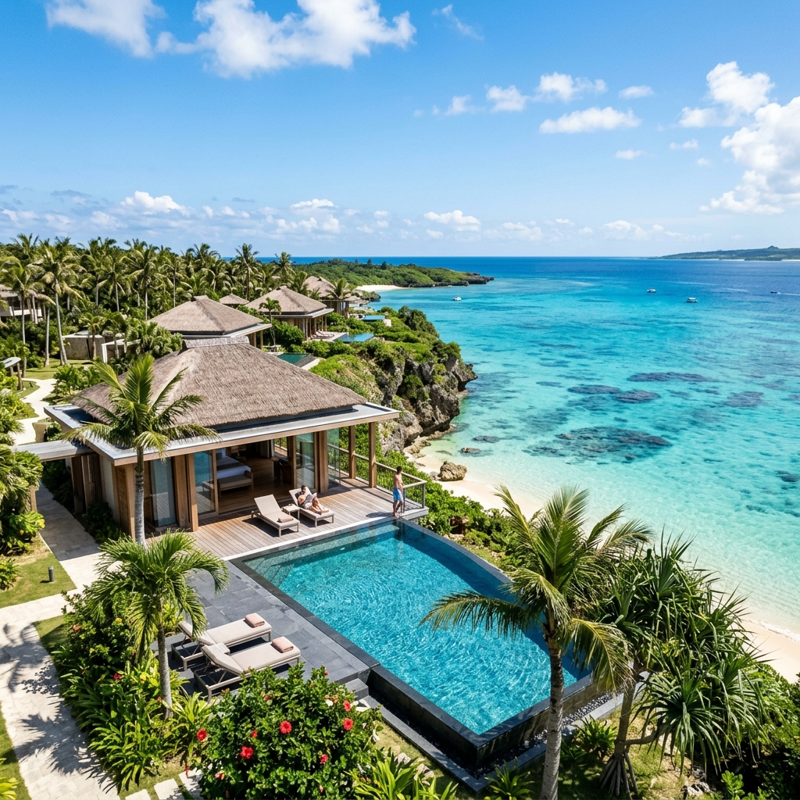

宮古島来間リゾート シーウッドホテル
沖縄県宮古島市下地来間484-7 プライベートプール＆絶景オーシャンビュー
4泊5日 詳細タイムスケジュール
お盆最盛期モード-
12:00 羽田空港発 (ANA NH87便) ➔ 15:00 宮古空港着
定刻到着後、手荷物受け取りへ。
-
15:15 - 16:00 トヨタレンタカー送迎＆手続き
空港送迎（約5分）。お盆時期は送迎待ち等で15〜20分前後バッファを想定。
-
16:30 シーウッドホテル（来間島）チェックイン
来間大橋を渡ってホテルへ。荷物を整理し少しひと休み。
-
17:30 【夕食】キャプテン・メリアン平良西里 予約済
昼食抜き・移動のお腹を満たすレトロでボリューム満点なステーキ＆海鮮。
-
10:00 - 13:00 【アクティビティ】伊良部島バギーツアー3時間コース集合場所：沖縄県宮古島市伊良部国仲85−2（※開始10分前集合）
風を感じる大迫力の冒険バギー体験。
-
13:30 【昼食】ヤンバーガー宮古島（YAMBURGER）平良久貝・伊良部大橋近く
伊良部大橋を渡ってすぐ！宮古牛100%パティを使用した絶品グルメバーガー。
-
16:30 【おやつ】島cafeとぅんからや（おすすめ候補）
太平洋を見渡す絶景高台カフェでゆったりカフェタイム。
-
18:30 【夕食】パイナテラス平良下里 予約済
南国風のリラックス空間で楽しむダイニングディナー。
-
10:00 レンタル自転車で来間島めぐり
シーウッドホテルを拠点に集落や竜宮城展望台などをサイクリング。
-
11:00 【昼食】楽園の果実来間島
有機野菜や宮古島産マンゴーを贅沢に使った農家レストラン特製ランチ。
-
13:30 【アクティビティ】アクセサリー作り体験
来間島のショップで貝殻やサンゴで作る世界に一つのクラフト体験。
-
15:30 【おやつ】果き氷 海莉来間島
マンゴーなど旬のフルーツがたっぷりの贅沢絶品かき氷。
-
18:30 【夕食】鮨人平良下里 予約済
宮古島の新鮮な旬魚を堪能する極上本格寿司ディナー。
-
10:00 北部ドライブ（西平安名崎・池間大橋）
エメラルドグリーンの絶景海道をドライブ。
-
12:00 【昼食】HARRY'S PIER SHRIMP TRUCK西平安名崎（狩俣）
西平安名崎近くのトラックでハワイアンガーリックシュリンプ。
-
15:00 【おやつ】宮古きび茶屋 さとうきび甘味処狩俣地区
さとうきびの素朴でやさしい甘みが広がる和スイーツ休憩。
-
18:30 【夕食】にんにく焼肉 プルシン 宮古島店平良港近く 予約済
スタミナ満点！パンチの効くにんにく焼肉で元気補給。
給油の行列や保安検査場（15:45通過締切）の手続き行列を考慮し早めに移動します。
-
11:30 シーウッドホテル チェックアウト
レイトチェックアウトで朝もゆったり過ごします（最大12:00まで可）。
-
12:00 【昼食】BRUAL平良下里・パイナガマ近く 予約済
肉厚グルメバーガーで旅の締めくくり（13:00退店）。
-
13:10 - 13:40 お土産＆空港近くで給油
空港近くのGSで指定油種の満タン給油。
-
13:45 - 14:00 トヨタレンタカー返却
車両返却後、送迎バス（約5分）で宮古空港へ。
-
14:15 宮古空港 到着・チェックイン
手荷物預け・保安検査通過。16:05発 ANA NH88便にて羽田（18:45着）へ。
宮古島インタラクティブマップ
ピンタップで詳細ポップアップ表示 / 日程切り替えで移動ルート（点線）を描画